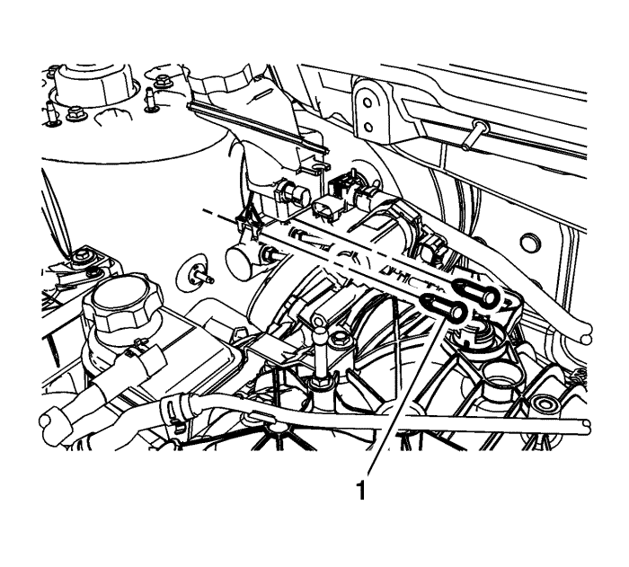
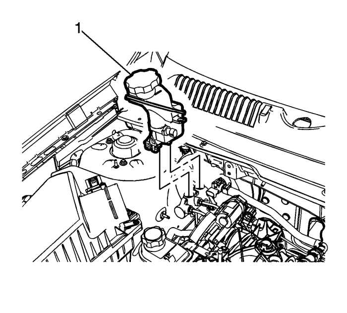
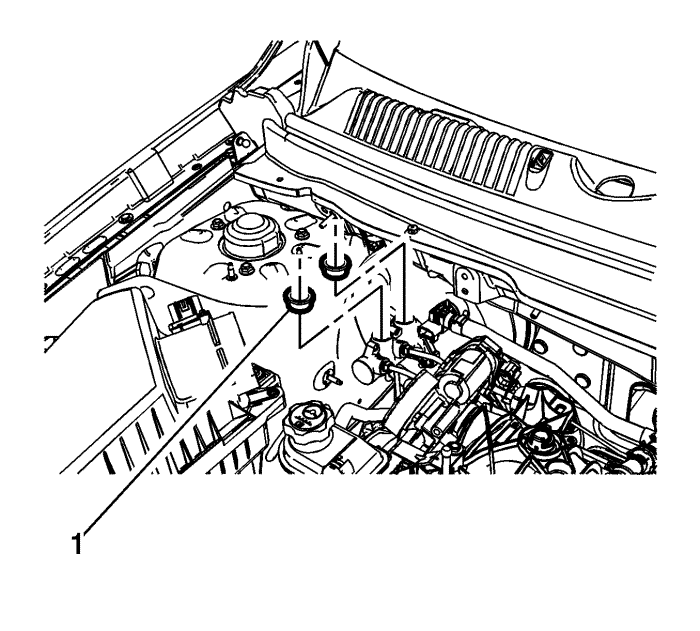

Sustitución de depósito acumulador de cilindro maestro — RHD (volante a la derecha)
Procedimiento de desmontaje
Advertencia: Consulte Advertencia de líquido de frenos irritante en la sección Prólogo.
Precaución: Consulte Advertencia sobre los efectos del líquido de frenos sobre la pintura y los componentes eléctricos en la sección Prólogo.
- Utilizando una herramienta adecuada, extraiga el líquido de frenos del depósito del cilindro maestro del freno.
- Deseche el líquido de frenos introduciéndolo en un depósito homologado.
- Desmonte la cubierta del colector de admisión; consulte Sustitución de la cubierta del colector de admisión (2.4 l), Sustitución de la cubierta del colector de admisión (3.0 l) o la protección del motor Sustitución del protector del motor (2.0 l, 2.2 l diésel).
- Si el vehículo está equipado con el motor 3.0 l , desmonte el conducto de salida del purificador de aire. Consultar Sustitución del conducto de salida del filtro de aire .
- Sin desacoplar los tubos flexibles, desmonte y sitúe a un lado el depósito de líquido de dirección asistida, si es necesario. Consultar Sustitución del depósito del líquido de la dirección asistida .
- Desenchufe el conector eléctrico del interruptor del indicador de nivel de líquido de frenos.

Nota: No reutilice los pasadores del depósito del cilindro maestro.
- Desmonte y deseche los pasadores (1) del depósito del cilindro maestro.

- Desmonte con cuidado el depósito (1) del cilindro maestro tirando del mismo hacia arriba, en dirección totalmente vertical.

- Retire las juntas (1) del depósito del cilindro maestro.
Procedimiento de montaje
- Lubrique ligeramente las juntas del depósito del cilindro maestro con líquido de frenos homologado por GM, procedente de un envase de líquido de frenos limpio y sellado.
- Monte las juntas (1) del depósito del cilindro maestro.
- Acople el depósito (1) del cilindro maestro al cilindro maestro.
- Compruebe que las bayonetas del depósito del cilindro maestro están perfectamente acopladas al cilindro maestro.
- Monte unos nuevos pasadores (1) en el depósito del cilindro maestro.
- Compruebe que los pasadores del depósito del cilindro maestro están perfectamente acoplados y que las pestañas de fijación están completamente desplegadas.
- Enchufe el conector eléctrico del interruptor del indicador del nivel del líquido de frenos.
- Llene el depósito del cilindro maestro. Consultar Llenado del depósito acumulador de cilindro maestro .
- Si se ha desmontado previamente, monte el depósito de líquido de dirección asistida. Consultar Sustitución del depósito del líquido de la dirección asistida .
- Si el vehículo está equipado con el motor 3.0 l , monte el conducto de salida del purificador de aire. Consultar Sustitución del conducto de salida del filtro de aire .
- Monte la cubierta del colector de admisión; consulte Sustitución de la cubierta del colector de admisión (2.4 l), Sustitución de la cubierta del colector de admisión (3.0 l) o la protección del motor Sustitución del protector del motor (2.0 l, 2.2 l diésel).
- Observe la sensación que transmite el pedal de freno tras llenar el depósito del cilindro maestro. Si el pedal transmite una sensación blanda, purgue el sistema de frenos hidráulico. Consultar Purga de aire del sistema de frenos hidráulicos : Manual → Presión .
| © Copyright Chevrolet Europe. All rights reserved |